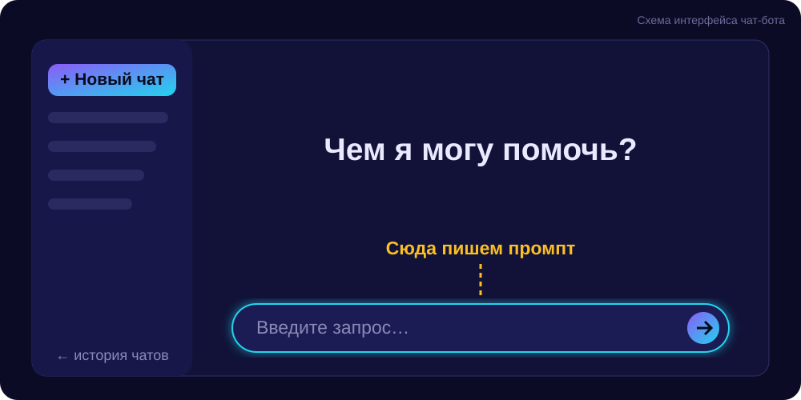
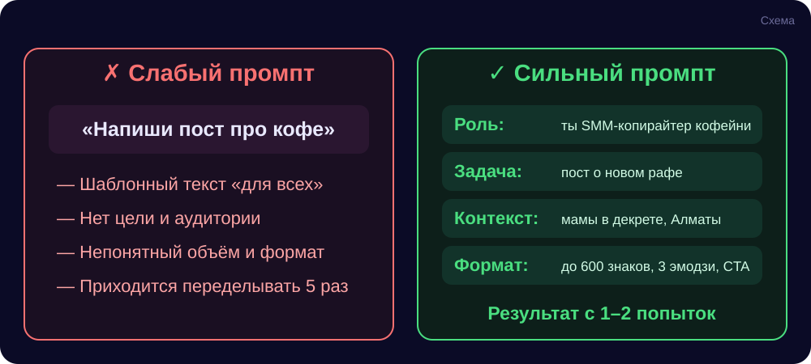
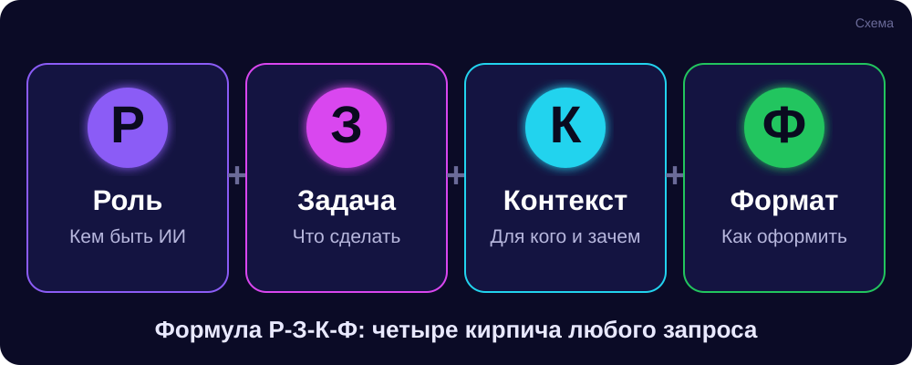
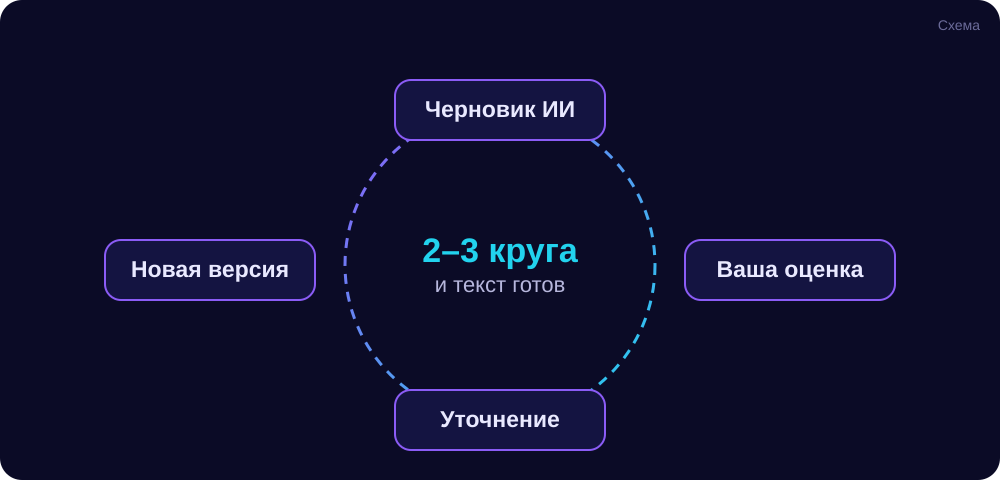
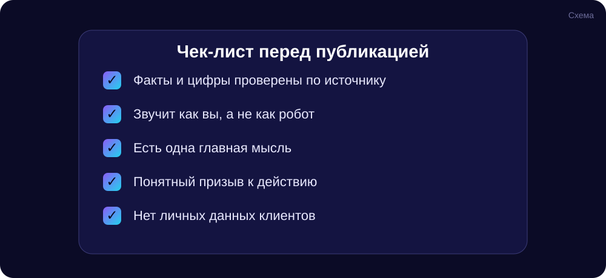

Главная / Пилот «Нейросети с нуля» / Бесплатный урок
Формула сильного промпта: первый пост с ИИ за 10 минут
Почему одни получают от нейросети шедевры, а другие — «воду»? Дело не в сервисе, а в запросе. За этот урок вы освоите формулу, которой пользуются профессионалы, и напишете готовый пост.
Слушайте, пока выполняете шаги.
- Телефон или компьютер
- Любой чат-бот с ИИ: ChatGPT, Gemini, Claude, GigaChat или Алиса (YandexGPT) — бесплатной версии достаточно
- 10 минут
Откройте чат с нейросетью
Зайдите на сайт или в приложение выбранного чат-бота и войдите в аккаунт. Нажмите «Новый чат» — так ИИ не будет путать вашу задачу с прошлыми разговорами. Внизу экрана есть поле ввода: туда мы и будем писать запрос (его называют промпт).

Посмотрите, почему «напиши пост» не работает
Нейросеть не знает ни вас, ни ваших клиентов. Если написать «Напиши пост про кофе», она выдаст среднестатистический текст «для всех» — гладкий и бесполезный. Чем больше нужного контекста вы дадите, тем точнее результат.

Запомните формулу Р-З-К-Ф
Любой сильный промпт состоит из четырёх частей:
- Р — Роль. Кем быть нейросети: копирайтером, юристом, репетитором. Это задаёт уровень и стиль.
- З — Задача. Что конкретно сделать: пост, письмо, план, таблицу.
- К — Контекст. Для кого, зачем, какие факты важны, чего избегать.
- Ф — Формат. Объём, тон, структура, эмодзи, призыв к действию.

Скопируйте и отправьте готовый промпт
Вот пример для кофейни. Скопируйте его, отправьте в чат — а потом замените детали на свои: ваш продукт, вашу аудиторию, ваш город.
Доведите текст за 2–3 уточнения
Первый ответ — это черновик. Не начинайте заново, а уточняйте в том же чате. Работают короткие команды:
- «Сделай первую строку цепляющей — вопрос к маме, которая устала»
- «Убери канцелярит и слова "уникальный", "незабываемый"»
- «Дай 3 варианта заголовка, разных по настроению»
- «Сократи на треть, сохрани призыв»

Проверьте перед публикацией
Нейросеть иногда уверенно ошибается — придумывает цифры, адреса, факты. Это называется «галлюцинации». Перед публикацией пройдитесь по чек-листу:

Домашнее задание
- Напишите промпт по формуле Р-З-К-Ф для своего продукта, услуги или блога.
- Получите текст и сделайте 2 уточнения.
- Сравните с ответом на запрос «напиши пост про …» без формулы. Почувствуйте разницу.
Понравилось? Следующий шаг — напишите «СТАРТ»
Это урок из пилотного практикума «Нейросети с нуля», где каждый решает с ИИ свою рабочую задачу. Напишите «СТАРТ» в Telegram @GrifRift555 — мы сообщим, когда откроется набор. Предоплату сейчас не берём.
В ответ мы спросим: «Какую задачу ты хочешь научиться решать с нейросетью?» Ваши ответы определят первые уроки пилота.